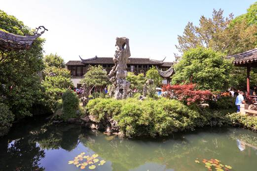

|  |
Liu Garden/The Lingering Garden
Opening hour: 7:30AM-5:30PM(3/1-11/15); 7:30AM-5PM(11.16-2.29)
The lingering garden is a large classical private garden in China, covering an area of 23300 square meters, representing the style of the Qing Dynasty. The garden is famous for its exquisite architectural art, spacious and gorgeous halls, and the courtyard is full of changes. The Taihu stone is the most crowny-yunfeng, which is "not out of the city but get the interest of the mountains". The garden was founded in 1593 by Xu Taishi, shaoqing of Taifu Temple, during the Wanli Reign of the Ming Dynasty. Qing Jiaqing early (1798), the park for suzhou Dongting Dongshan Liu Shu all, named Hanbi Zhuang. In the twelfth year of Tongzhi (1873), the garden was purchased by Changzhou Shengkang and renamed as Lingering Garden. In 1953, suzhou Municipal people's Government appropriated funds to renovate the garden, which was completed at the end of the year. In 1961, it was listed as one of the first national key cultural relics protection units by The State Council, and was honored as one of China's four famous gardens together with the Summer Palace in Beijing, Chengde Summer Resort and Humble Administrator's Garden in Suzhou. 1991 repair yizhuang, ancestral temple. In December 1997, as a typical example of suzhou's classical gardens, the Lingering Garden, together with humble Administrator's Garden, Master of the Nets Garden and Huanxiu Shanzhuang, was listed on the World Heritage List with the approval of UNESCO. 1998 It was rebuilt as suzhou Garden Archives in the southwest. In December 1997, as a typical example of suzhou's classical gardens, the Lingering Garden, together with humble Administrator's Garden, Master of the Nets Garden and Huanxiu Shanzhuang, was listed on the World Heritage List with the approval of UNESCO. |